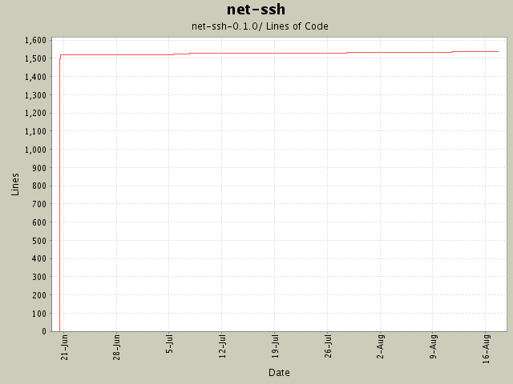

Summary Period: 2004-06-20 to 2004-08-17
[root]/net-ssh-0.1.0
 bin
(1 files, 213 lines)
bin
(1 files, 213 lines)
 doc
(8 files, 2563 lines)
doc
(8 files, 2563 lines)
 examples
(11 files, 775 lines)
examples
(11 files, 775 lines)
 lib
(0 files, 0 lines)
lib
(0 files, 0 lines)
 net
(1 files, 252 lines)
net
(1 files, 252 lines)
 ssh
(3 files, 289 lines)
ssh
(3 files, 289 lines)
 proxy
(4 files, 416 lines)
proxy
(4 files, 416 lines)
 service
(9 files, 2342 lines)
service
(9 files, 2342 lines)
 sftp
(5 files, 1475 lines)
sftp
(5 files, 1475 lines)
 transport
(7 files, 1195 lines)
transport
(7 files, 1195 lines)
 kex
(2 files, 304 lines)
kex
(2 files, 304 lines)
 util
(1 files, 313 lines)
util
(1 files, 313 lines)
 uri
(2 files, 115 lines)
uri
(2 files, 115 lines)
 test
(5 files, 630 lines)
test
(5 files, 630 lines)

Total Lines Of Code:
1537 (2005-01-07 15:12)
| Author | Changes | Lines of Code | Lines per Change |
|---|---|---|---|
| minam | 40 (100.0%) | 1571 (100.0%) | 39.2 |
Updated TODO list.
3 lines of code changed in:
Version bump to 0.1.0
2 lines of code changed in:
Support for hostbased authenticaton.
0 lines of code changed in:
SOCKS4 support. Documented the basic usage of the SOCKS proxies.
0 lines of code changed in:
HTTP proxy now supports basic authorization (thanks, Jochen!).
3 lines of code changed in:
More unit testing madness.
3 lines of code changed in:
Added more SFTP protocol coverage, including support for opening and manipulating
files. Basic buffered file IO is supported as well.
2 lines of code changed in:
Gabriele Renzi's suggestion of an open-uri interface for SFTP. This
required some new methods be added to the SFTP interfaces (attributes,
and size). Also modified the SFTP 'get' interfaces to support the specification
of a 'chunk size' and a progress callback.
1 lines of code changed in:
Sanity checking for valid OpenSSL (module and library) versions.
1 lines of code changed in:
Added Daniel Hobe's suggestion of user-specified authentication methods. Also
bumped the version to 0.0.5.
2 lines of code changed in:
Updated README and TODO. Added rb-keygen to gemspec file. Fixed typo in
userauth.rb.
8 lines of code changed in:
Added "send_extended_data" method to Channel.
0 lines of code changed in:
Added better logging as a TODO. Added Daniel's suggestion for a 'host'
property on the SSH session. Also added a 'port' property.
1 lines of code changed in:
Routine README and TODO update
1 lines of code changed in:
First two chapters of Net::SSH manual.
1 lines of code changed in:
Thanks again to Daniel Hobe for potentially fixing the problem with name/value
pairs in the private key headers. The load_private_key method should work fine
now for all valid keys. It will even prompt for passphrases! (Thanks, Daniel!)
0 lines of code changed in:
Support for interactively executing processes on a remote machine.
1 lines of code changed in:
Fixed problem with bad window-size/packet-size on earlier versions of
OpenSSH servers (verified with 3.1p1). Also added interim support for
interactive sessions.
0 lines of code changed in:
Added rescue clause when loading keys so that the program doesn't die if
it can't load a key.
1 lines of code changed in:
Version bump.
1 lines of code changed in:
(10 more)
Generated by StatCVS 0.2.3